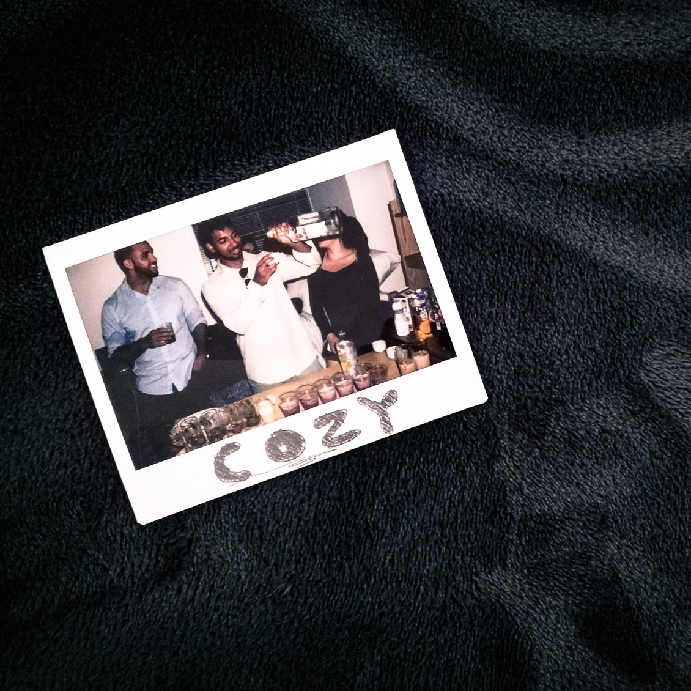
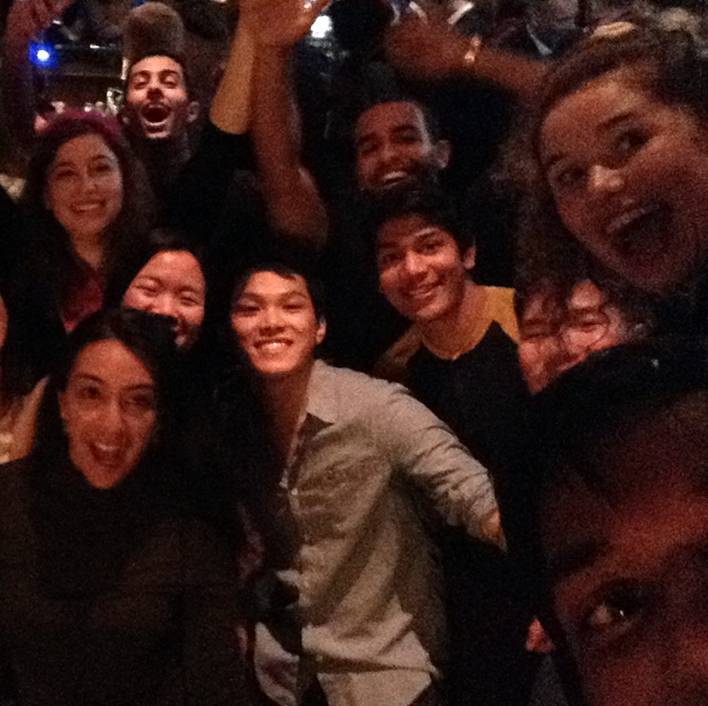
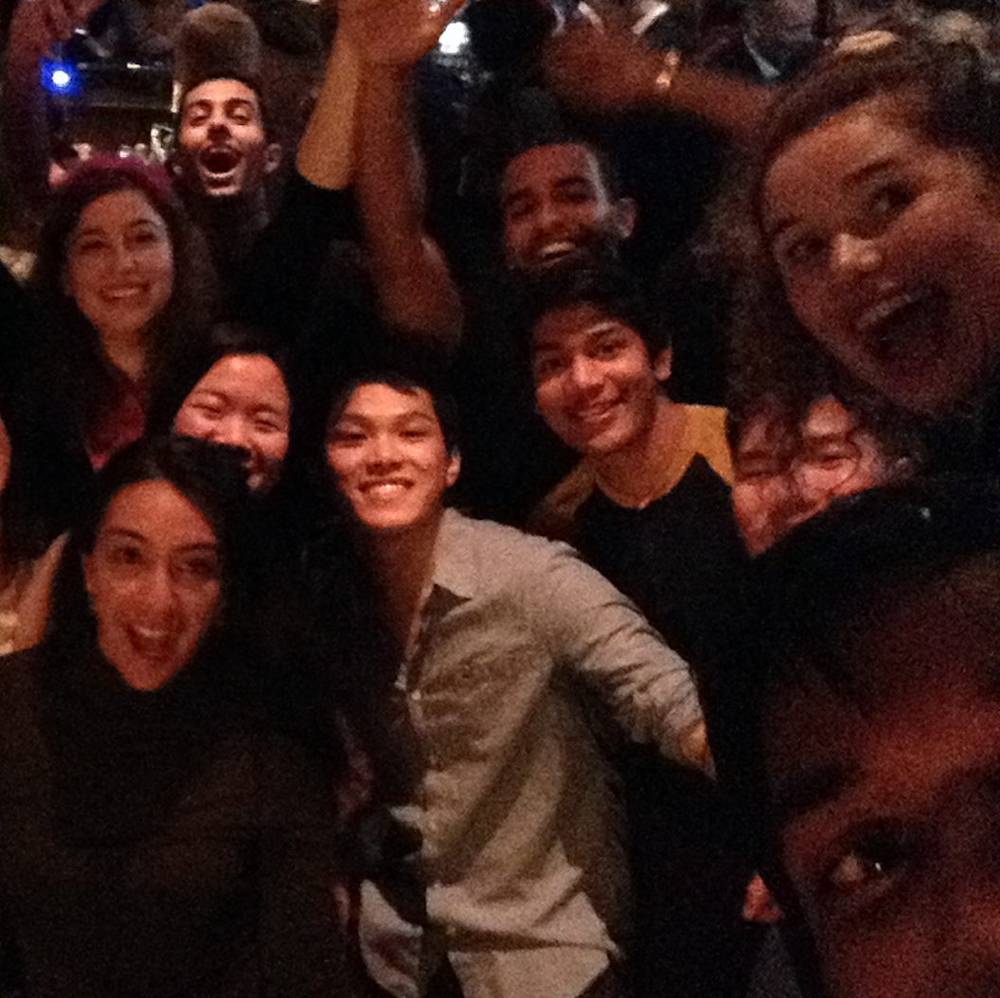

I've lived long enough to know that not all friendships
last forever. Life is long and people naturally drift apart.
Some do last and I hope ours does.
But what does matter regardless of life forward
is the memories that were made.
Because at the end of the day,
that's what friendship is about.
So in memory of our time at Columbia:

 
